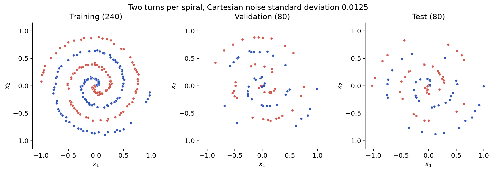
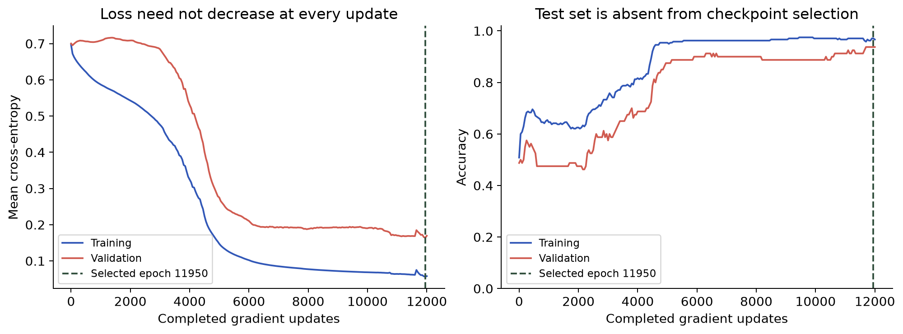
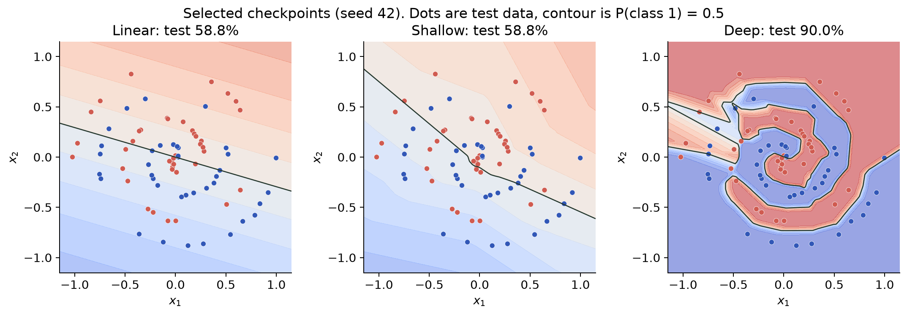
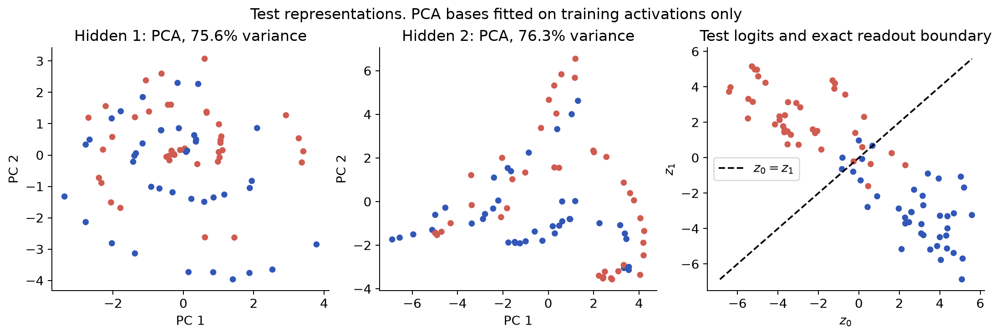

Affine maps, backpropagation, PCA and SVD UE25MA242A: Mathematical Foundation for AI & Data Science
Project 10: compositions of matrix transformations Project 11: PCA of hidden activations Project 14: SVD and rank approximation An extension of the supplied topics

400 points, two turns per spiral Cartesian noise standard deviation 0.0125 240 training, 80 validation, 80 test Balanced classes in each split
An affine classifier has a straight decision boundary Two same-class segments intersect across classes The intersection lies in both convex hulls Perfect strict separation is impossible
| Map | Weights | Biases | Parameters |
|---|---|---|---|
| Input to hidden 1 | 16 x 2 | 16 x 1 | 48 |
| Hidden 1 to hidden 2 | 16 x 16 | 16 x 1 | 272 |
| Hidden 2 to output | 2 x 16 | 2 x 1 | 34 |
| Total | 320 entries | 34 entries | 354 |
Two ReLU hidden layers and a softmax output
Z_l = W_l A_(l-1) + b_l 1^T A1 = ReLU(Z1), A2 = ReLU(Z2) P = softmax(Z3) Each column holds one sample
D3 = P - Y D_l = (W_(l+1)^T D_(l+1)) * 1[Z_l > 0] grad(W_l) = D_l A_(l-1)^T / m grad(b_l) = D_l 1 / m
Centered finite differences check every scalar 35 entries checked in a small network Maximum absolute error: 9.89e-11 Seven mathematical checks pass

12,000 full-batch updates, learning rate 0.1 Checkpoints every 50 updates Seed 42 selects epoch 11950 Selection minimizes validation loss
| Model | Parameters | Train | Validation | Test | Epoch |
|---|---|---|---|---|---|
| Linear | 6 | 50.00% | 45.00% | 58.75% | 4500 |
| Shallow | 82 | 57.50% | 51.25% | 58.75% | 50 |
| Deep | 354 | 97.08% | 93.75% | 90.00% | 11950 |
Deep network: 72/80 test predictions correct
| Model | Seed 42 | Seed 43 | Seed 44 | Mean | Sample SD |
|---|---|---|---|---|---|
| Linear | 58.75% | 57.50% | 61.25% | 59.17% | 1.91 pp |
| Shallow | 58.75% | 61.25% | 55.00% | 58.33% | 3.15 pp |
| Deep | 90.00% | 92.50% | 78.75% | 87.08% | 7.32 pp |
Three initializations on one fixed split

Dots are held-out test points Contours mark equal class probabilities

PCA bases use training activations Two components can discard useful information
| Weight | Shape | Rank | Input nullity | s_max / s_min |
|---|---|---|---|---|
| W1 | 16 x 2 | 2 | 0 | 1.190 |
| W2 | 16 x 16 | 16 | 0 | 197.537 |
| W3 | 2 x 16 | 2 | 14 | 13.287 |
W = U diag(s) V^T Gram eigenvalues are s_i^2 plus structural zeros
| Rank k | Energy | Factor entries | Validation | Test |
|---|---|---|---|---|
| 2 | 64.47% | 64 | 56.25% | 65.00% |
| 4 | 83.11% | 128 | 68.75% | 77.50% |
| 8 | 95.61% | 256 | 96.25% | 90.00% |
| 12 | 99.72% | 384 | 92.50% | 90.00% |
| 16 | 100.00% | 512 | 93.75% | 90.00% |
Fixed rank truncations of W2, without retraining
Nonlinear features improve this spiral experiment Matrix calculus makes learning explicit PCA and SVD describe different objects One split and three seeds limit the conclusions